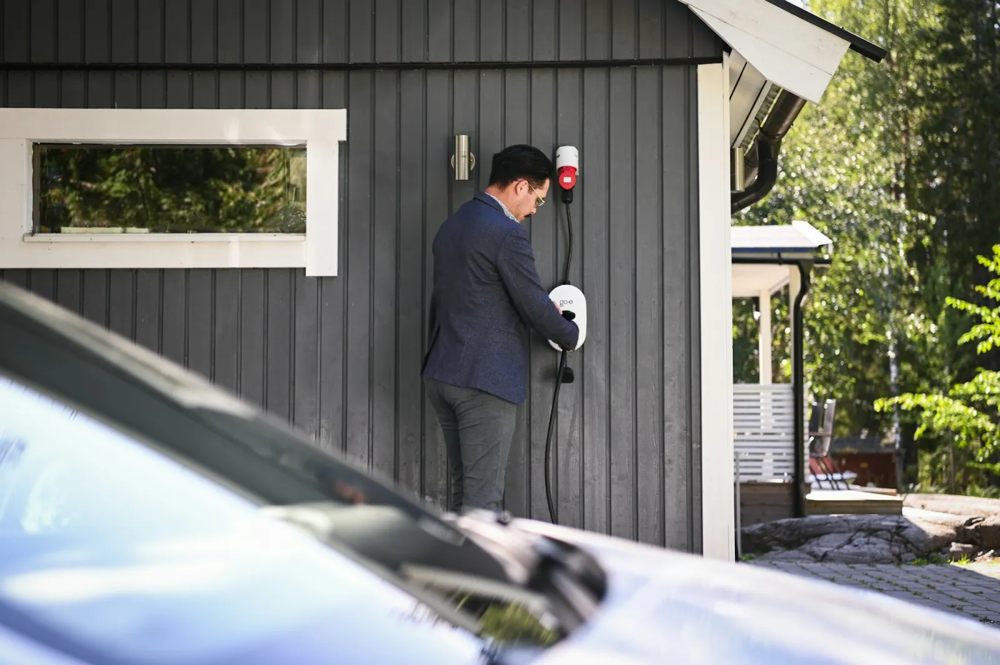

01
Utility context
We identify the serving utility, relevant public service clues, and the likely questions that will shape an interconnection conversation.

Pre-Acquisition Site Screen
Before you buy, lease, or otherwise commit to a property, AmpIQ gives you a desk-based first answer on whether EV charging is worth pursuing, and what must be proven next.
The right first question
This is not a promise that a project will be approved. It is a disciplined first look that helps an owner avoid spending real money on the wrong property, the wrong assumptions, or the wrong next step.
01
We identify the serving utility, relevant public service clues, and the likely questions that will shape an interconnection conversation.
02
We review parcel access, visible easement considerations, parking configuration, and physical conditions that may affect charger placement.
03
We flag readily identifiable zoning, use, setback, and permitting considerations that could change the path, cost, or timing.
04
We put the findings into a clear next-step sequence, including which questions require a site visit, utility confirmation, or licensed engineering.
What you receive
What this is not
How it works
The screen is designed for the moment when a property is under consideration, not after the project team and equipment assumptions have already formed.
01
We begin with the address, acquisition or lease context, intended use, and the charging question you need answered.
02
We review the available public record, local framework, utility context, and visible site conditions.
03
We distinguish likely constraints from open questions and identify what would change the answer.
04
If the site advances, we scope the appropriate site assessment, engineering, utility, or permitting work.
The outcome
A strong screen does not manufacture certainty. It tells you whether the property deserves further work, what that work should be, and what could still make the answer change.
See an example decision memoNext step
Bring the address and the decision you need to make. We will help you determine whether a Pre-Acquisition Site Screen is the right first step.